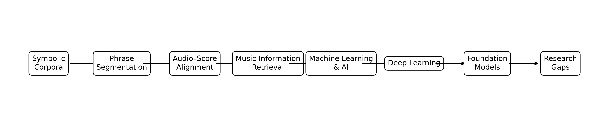

A Review of Computational Research on Turkish Makam Music#
Overview#
Computational research on Turkish makam music has expanded considerably over the past two decades. The development of symbolic music corpora, phrase-level annotations, audio recordings, and machine-readable metadata has enabled increasingly sophisticated computational approaches for music analysis.
This chapter reviews representative studies related to Turkish makam music from the perspectives of computational musicology, Music Information Retrieval (MIR), symbolic music processing, machine learning, and artificial intelligence. Rather than providing an exhaustive bibliography, the objective is to summarize the principal research directions, highlight methodological developments, and identify emerging research opportunities.
Literature Review Roadmap#
This roadmap summarizes the conceptual progression of the literature reviewed in this chapter.
import matplotlib.pyplot as plt
from pathlib import Path
stages = [
"Symbolic\nCorpora",
"Phrase\nSegmentation",
"Audio–Score\nAlignment",
"Music Information\nRetrieval",
"Machine Learning\n& AI",
"Deep Learning",
"Foundation\nModels",
"Research\nGaps"
]
fig, ax = plt.subplots(figsize=(13, 2.8))
ax.axis("off")
x_positions = range(len(stages))
for i, stage in enumerate(stages):
ax.text(
i, 0.5, stage,
ha="center", va="center",
fontsize=11,
bbox=dict(
boxstyle="round,pad=0.45",
edgecolor="black",
facecolor="white"
)
)
if i < len(stages) - 1:
ax.annotate(
"",
xy=(i + 0.72, 0.5),
xytext=(i + 0.28, 0.5),
arrowprops=dict(arrowstyle="->", lw=1.5)
)
ax.set_xlim(-0.6, len(stages) - 0.4)
ax.set_ylim(0, 1)
output_path = Path("../_static/literature_review_workflow.png")
output_path.parent.mkdir(parents=True, exist_ok=True)
plt.tight_layout()
plt.savefig(output_path, dpi=300, bbox_inches="tight")
plt.show()
Organization of the Literature#
The reviewed studies are organized into six thematic categories:
Symbolic Music Corpora
Phrase Segmentation and Melodic Analysis
Audio–Score Alignment
Music Information Retrieval
Machine Learning and Artificial Intelligence
Future Research Trends
This organization follows the historical development of computational research on Turkish makam music, beginning with dataset creation and progressing toward advanced artificial intelligence methods.
{kind=link}

Conceptual organization of the literature review, from symbolic corpora to foundation models and open research gaps.#
import pandas as pd
themes = pd.DataFrame({
"Theme": [
"Symbolic Music Corpora",
"Phrase Segmentation",
"Audio–Score Alignment",
"Music Information Retrieval",
"Machine Learning",
"Future AI Research"
],
"Representative Studies": [
"SymbTr",
"Phrase Datasets",
"Score–Audio Synchronization",
"Retrieval and Similarity",
"Classification",
"Foundation Models"
],
"Typical Methods": [
"Corpus Development",
"Expert Annotation",
"Alignment Algorithms",
"Similarity Search",
"SVM, RF, Neural Networks",
"Transformers, LLMs"
]
})
themes
| Theme | Representative Studies | Typical Methods | |
|---|---|---|---|
| 0 | Symbolic Music Corpora | SymbTr | Corpus Development |
| 1 | Phrase Segmentation | Phrase Datasets | Expert Annotation |
| 2 | Audio–Score Alignment | Score–Audio Synchronization | Alignment Algorithms |
| 3 | Music Information Retrieval | Retrieval and Similarity | Similarity Search |
| 4 | Machine Learning | Classification | SVM, RF, Neural Networks |
| 5 | Future AI Research | Foundation Models | Transformers, LLMs |
1. Symbolic Music Corpora#
The availability of publicly accessible symbolic music corpora has played a fundamental role in advancing computational research on Turkish makam music. Open symbolic datasets enable reproducible experimentation, facilitate comparative evaluation of computational methods, and provide standardized benchmarks for the development of Music Information Retrieval (MIR) algorithms.
The introduction of the SymbTr corpus represented the first comprehensive machine-readable symbolic collection specifically designed for Turkish makam music. It established a standardized representation of symbolic scores and enabled research on melody processing, symbolic music analysis, similarity analysis, makam recognition, and computational musicology [1].
The latest release, SymbTr v3.0, considerably expands the available symbolic resources by providing approximately 3,000 musical works covering 164 makams, 135 usuls, and more than 1.2 million symbolic notes. Owing to its size, diversity, and standardized representation, SymbTr v3.0 has become one of the principal benchmark datasets for computational studies on Turkish makam music [2].
Beyond the main SymbTr corpus, several complementary symbolic datasets have been developed to support more specialized research problems. These include phrase-level symbolic datasets, melodic segmentation annotations, and corpora designed for score–audio alignment, enabling investigations into structural analysis, phrase segmentation, tonic identification, mode recognition, and multimodal music analysis [3, 4, 5].
Collectively, these symbolic resources have established a robust foundation for reproducible computational musicology research and continue to support the development of increasingly sophisticated machine learning and artificial intelligence methods for Turkish makam music analysis.
Key Takeaways
Public symbolic corpora enabled reproducible computational research on Turkish makam music.
SymbTr established a standardized symbolic representation for makam-based computational analysis.
Phrase-level and multimodal datasets extended the scope from score-level analysis to structural and audio–symbolic research.
symbolic = pd.DataFrame({
"Research Direction":[
"Corpus Construction",
"Metadata Standardization",
"Machine-readable Scores",
"Open Data"
],
"Typical Contribution":[
"Dataset creation",
"Annotation",
"Computational analysis",
"Reproducibility"
]
})
symbolic
| Research Direction | Typical Contribution | |
|---|---|---|
| 0 | Corpus Construction | Dataset creation |
| 1 | Metadata Standardization | Annotation |
| 2 | Machine-readable Scores | Computational analysis |
| 3 | Open Data | Reproducibility |
2. Phrase Segmentation and Melodic Analysis#
Phrase segmentation represents one of the fundamental research topics in computational musicology because musical phrases correspond to meaningful structural units perceived by musicians and listeners. Compared with complete musical scores, phrase-level representations provide a more detailed description of melodic organization while reducing computational complexity.
To facilitate phrase-based computational research, the Turkish Makam Symbolic Phrase Dataset introduced expert-annotated phrase boundaries for the SymbTr corpus, creating one of the first large-scale symbolic phrase datasets specifically designed for Turkish makam music [3]. The availability of expert-annotated phrase boundaries has also facilitated reproducible benchmarking and comparative evaluation of automatic phrase segmentation methods across different computational approaches [6].
Phrase annotations enable a wide range of computational analyses, including melodic similarity measurement, structural segmentation, motif discovery, phrase classification, and music information retrieval. Because phrase boundaries are manually annotated by domain experts, they also provide valuable benchmark data for evaluating automatic segmentation algorithms.
Subsequent studies further demonstrated that phrase-level representations improve structural analysis and computational modeling of Turkish makam music. These representations have been successfully employed for investigating melodic organization, hierarchical musical structure, and phrase similarity within large symbolic music collections [6].
More recently, phrase-based symbolic datasets have become increasingly important for machine learning and artificial intelligence applications. Rather than learning from complete musical scores, modern computational approaches frequently operate on phrase-level representations, enabling algorithms to capture local melodic characteristics, improve generalization performance, and learn meaningful symbolic representations. Consequently, phrase-level datasets are expected to play an increasingly important role in future foundation models and representation learning approaches for symbolic music analysis.
Key Takeaways
Phrase segmentation provides meaningful structural units for computational analysis.
Expert-annotated phrase datasets enable reproducible benchmarking of segmentation algorithms.
Phrase-level representations improve melodic analysis, similarity measurement, and machine learning applications.
3. Audio–Score Alignment#
Audio–score alignment aims to establish temporal correspondences between symbolic music scores and their audio performances. This task enables computational systems to associate symbolic note events with performed audio, thereby supporting music analysis, performance studies, automatic annotation, and interactive music applications.
Unlike Western classical music, Turkish makam music presents additional challenges for alignment because of expressive timing, ornamentation, improvisational characteristics, and microtonal pitch structures. These characteristics require alignment methods capable of handling significant temporal and melodic variability while preserving the musical structure of performances.
Within the CompMusic project, several studies introduced computational methods for aligning symbolic scores with audio recordings of Turkish makam music. These works demonstrated that score-informed alignment substantially improves synchronization accuracy and provides an effective framework for linking symbolic and audio representations [4] [7].
Reliable score–audio alignment has subsequently enabled a variety of higher-level Music Information Retrieval (MIR) tasks, including automatic tonic identification, score following, performance synchronization, melodic comparison, and computational performance analysis. In particular, score-informed tonic identification significantly improved automatic makam analysis by combining symbolic information with acoustic observations [8].
The availability of aligned symbolic scores and audio recordings has also facilitated the development of comprehensive computational corpora for Turkish makam music. These multimodal datasets support reproducible research across symbolic analysis, audio signal processing, machine learning, and computational musicology, while providing common benchmark resources for algorithm evaluation [5].
More recently, score–audio alignment has become an important component of multimodal artificial intelligence systems. By integrating symbolic notation with performance recordings, alignment methods provide complementary musical representations that are increasingly employed for representation learning, cross-modal retrieval, automatic transcription, and foundation models for music understanding.
Key Takeaways
Audio–score alignment connects symbolic scores with performance recordings.
Alignment techniques support performance analysis, score following, and multimodal MIR applications.
Turkish makam music presents unique alignment challenges due to ornamentation, tempo flexibility, and microtonality.
4. Music Information Retrieval#
Music Information Retrieval (MIR) is an interdisciplinary research field that combines computer science, signal processing, musicology, machine learning, and artificial intelligence to develop computational methods for organizing, analyzing, searching, and understanding musical data. Since its emergence in the late 1990s, MIR has become one of the principal research areas for computational analysis of both audio and symbolic music collections [9].
Early MIR research primarily focused on audio-based tasks such as genre classification, melody extraction, query-by-humming, and music recommendation. As increasingly large symbolic music corpora became publicly available, symbolic Music Information Retrieval evolved into an important research direction, enabling investigations of musical structure, similarity analysis, score processing, and computational musicology.
Content-Based Music Information Retrieval (CBMIR) further extended the field by emphasizing computational representations extracted directly from musical content rather than manually assigned metadata. This paradigm has enabled efficient retrieval based on melodic, rhythmic, harmonic, and structural characteristics while supporting automatic organization of large-scale music collections [10].
The diversity of musical traditions has also motivated research beyond Western music. The CompMusic project introduced a multicultural perspective to MIR by developing computational approaches applicable to non-Western musical traditions, including Turkish makam music, Hindustani music, Carnatic music, Arab-Andalusian music, and Beijing Opera. This initiative demonstrated the importance of culturally informed computational models and highlighted the need for publicly accessible datasets representing diverse musical systems [11].
Within Turkish makam music, MIR research has expanded from corpus construction toward increasingly sophisticated computational analyses involving symbolic music processing, score–audio alignment, phrase segmentation, machine learning, multimodal analysis, and representation learning. The availability of standardized symbolic datasets such as SymbTr has substantially accelerated research progress by providing common benchmark datasets and reproducible evaluation frameworks.
Today, MIR continues to evolve through advances in deep learning, self-supervised learning, multimodal representation learning, and foundation models. These developments are expected to further improve automatic music understanding while enabling increasingly powerful computational analysis of culturally diverse musical traditions.
Key Takeaways
MIR provides the computational foundation for analyzing, retrieving, and organizing music collections.
Turkish makam music extends classical MIR with culture-specific musical characteristics.
Standardized datasets have enabled reproducible evaluation of MIR algorithms for makam music.
5. Machine Learning and Artificial Intelligence#
Machine learning has become one of the principal computational paradigms for analyzing symbolic and audio music data. Unlike traditional rule-based systems, machine learning algorithms automatically discover complex patterns from large collections of musical examples, enabling scalable solutions for classification, retrieval, recommendation, segmentation, and music understanding.
Early applications of machine learning in Music Information Retrieval primarily employed supervised learning algorithms such as k-Nearest Neighbors (KNN), Support Vector Machines (SVM), Decision Trees, and Random Forests. These methods demonstrated strong performance across various MIR tasks, including genre classification, instrument recognition, mood prediction, and symbolic music classification [12] [13] [14].
Support Vector Machines became particularly popular because of their ability to model high-dimensional feature spaces using kernel functions. Random Forests introduced robust ensemble learning strategies capable of reducing overfitting while providing interpretable feature importance measures. Meanwhile, nearest-neighbor approaches offered simple yet competitive baselines for similarity-based music retrieval and classification problems.
As symbolic music datasets increased in both size and diversity, machine learning methods expanded beyond conventional classification toward representation learning, feature engineering, clustering, dimensionality reduction, and multimodal data fusion. Comprehensive textbooks such as Pattern Recognition and Machine Learning and The Elements of Statistical Learning established the theoretical foundations that continue to underpin modern computational music research [15] [16] [17].
Within Turkish makam music research, machine learning techniques have increasingly been applied to symbolic score analysis, makam recognition, phrase classification, melodic similarity analysis, tonic identification, and computational performance modeling. The availability of standardized benchmark datasets has significantly improved reproducibility and facilitated objective comparisons among computational approaches.
Today, machine learning serves as the foundation for more advanced artificial intelligence techniques, including deep neural networks, self-supervised learning, multimodal representation learning, and large-scale foundation models. Consequently, modern computational musicology increasingly combines traditional machine learning algorithms with recent advances in artificial intelligence to better understand complex musical structures and cultural diversity.
Key Takeaways
Machine learning enables automatic recognition, classification, and analysis of symbolic music.
Classical algorithms remain effective for many symbolic music analysis tasks.
Feature engineering continues to play an important role in computational musicology.
6. Deep Learning#
The rapid growth of large-scale music datasets and advances in computational hardware have significantly accelerated the adoption of deep learning methods in Music Information Retrieval. Unlike conventional machine learning algorithms that rely on manually engineered features, deep neural networks automatically learn hierarchical feature representations directly from raw or minimally processed musical data.
Convolutional Neural Networks (CNNs) were among the first deep learning architectures successfully applied to music analysis, demonstrating remarkable performance improvements in tasks such as music genre classification, instrument recognition, audio tagging, and music recommendation. Their ability to learn complex local patterns has made CNNs particularly effective for processing spectrograms and other time–frequency representations of musical signals [18] [19].
Subsequent developments introduced Recurrent Neural Networks (RNNs), Long Short-Term Memory (LSTM) networks, and attention-based architectures capable of modeling temporal dependencies within musical sequences. These models significantly improved the analysis of sequential musical structures, including melody generation, phrase prediction, symbolic music modeling, and automatic transcription.
Deep representation learning has also transformed symbolic music analysis. Rather than relying solely on handcrafted descriptors, modern systems learn latent representations that capture melodic, rhythmic, and structural relationships across large music collections. These learned representations have substantially improved clustering, similarity analysis, retrieval, and downstream machine learning tasks.
Within Turkish makam music research, deep learning remains an emerging area because publicly available annotated datasets are considerably smaller than those available for Western music traditions. Nevertheless, recent increases in corpus size, phrase-level annotations, and multimodal symbolic resources have created favorable conditions for applying deep neural networks to makam recognition, melodic analysis, symbolic generation, and computational musicology.
As computational resources continue to improve and larger annotated corpora become available, deep learning is expected to become an increasingly important component of future computational analysis frameworks for Turkish makam music.
Key Takeaways
Deep learning reduces dependence on handcrafted feature extraction.
Neural architectures learn hierarchical musical representations directly from data.
Large annotated datasets remain essential for training reliable deep learning models.
7. Foundation Models for Music#
Recent advances in artificial intelligence have introduced foundation models capable of learning general-purpose representations from extremely large datasets. Unlike conventional supervised learning approaches, foundation models are typically pretrained using self-supervised objectives and subsequently adapted to diverse downstream tasks through fine-tuning or prompt-based learning. This paradigm has fundamentally transformed natural language processing, computer vision, and, more recently, Music Information Retrieval.
The introduction of the Transformer architecture established the foundation for modern sequence modeling by replacing recurrent computations with self-attention mechanisms capable of capturing long-range dependencies within sequential data [20]. Since musical compositions naturally exhibit hierarchical and long-term structural relationships, Transformer-based architectures have become increasingly attractive for symbolic music analysis, music generation, automatic transcription, and multimodal music understanding.
The broader concept of foundation models further expanded this paradigm by demonstrating that large-scale pretrained models can serve as general computational backbones for numerous downstream applications [21]. Rather than designing task-specific models for individual music analysis problems, researchers increasingly develop unified architectures capable of supporting classification, retrieval, recommendation, generation, segmentation, and music understanding within a common representation space.
Recent surveys indicate that foundation models are rapidly becoming a major research direction in computational music analysis. Music foundation models integrate symbolic scores, audio recordings, textual metadata, and multimodal representations to learn comprehensive musical knowledge from diverse sources. These models support a wide variety of applications, including music generation, performance analysis, cross-modal retrieval, music recommendation, educational systems, and interactive artificial intelligence [22].
For Turkish makam music, foundation models remain largely unexplored because of the limited availability of large-scale annotated datasets. Nevertheless, the continuous expansion of symbolic corpora such as SymbTr, together with phrase-level annotations, score–audio alignment resources, and multimodal datasets, provides an increasingly favorable environment for developing culturally informed foundation models. Such models have the potential to support automatic makam recognition, symbolic music generation, melodic similarity analysis, computational musicology, and digital preservation of Turkish musical heritage.
The emergence of foundation models represents a significant opportunity for future research, enabling computational systems capable of learning richer musical representations while supporting reproducible, scalable, and culturally aware music analysis across diverse musical traditions.
Key Takeaways
Foundation models represent a major shift toward general-purpose musical intelligence.
Large-scale pretraining enables transferable representations across multiple music tasks.
Turkish makam music remains largely underrepresented in current foundation models, creating significant research opportunities.
8. Summary and Research Gaps#
The literature reviewed in this chapter demonstrates the substantial progress achieved in computational analysis of Turkish makam music over the past decade. The development of publicly available symbolic corpora, particularly the SymbTr family of datasets, has established a solid foundation for reproducible research and enabled a broad spectrum of computational studies ranging from symbolic music analysis to multimodal Music Information Retrieval.
Early research primarily focused on corpus construction, symbolic score representation, phrase segmentation, and score–audio alignment. These efforts provided essential computational infrastructure that subsequently supported more advanced studies involving machine learning, automatic makam recognition, melodic similarity analysis, and computational musicology.
Recent advances in machine learning, deep learning, and representation learning have significantly expanded the scope of computational music research. Modern approaches increasingly employ neural architectures capable of learning rich musical representations directly from symbolic scores and audio recordings. More recently, transformer architectures and foundation models have introduced new opportunities for unified multimodal music understanding and large-scale musical knowledge representation.
Despite these advances, several important challenges remain. Turkish makam music continues to face limitations in the availability of large-scale annotated datasets, standardized benchmark tasks, multimodal corpora, and foundation models specifically designed for culturally diverse musical traditions. Furthermore, issues related to explainability, reproducibility, cross-cultural generalization, and human-centered artificial intelligence remain largely unexplored.
These challenges represent promising directions for future research. The following chapter discusses these open research problems and outlines potential opportunities for developing next-generation computational methods for Turkish makam music analysis.
Summary and Research Gaps#
Overall Summary#
…
Remaining Challenges#
Limited benchmark datasets
Limited multimodal resources
Scarcity of large-scale pretrained models
Lack of explainable AI approaches
Need for reproducible evaluation protocols
Future Outlook#
…
References#
M. Kemal Karaosmanoğlu. A turkish makam music symbolic database for music information retrieval: symbtr. In Proceedings of the 13th International Society for Music Information Retrieval Conference (ISMIR), 223–228. Porto, Portugal, 2012.
M. Kemal Karaosmanoğlu. Turkish maqam music symbolic data (symbtr v3.0). 2025. doi:10.5281/zenodo.15470412.
M. Kemal Karaosmanoğlu, Barış Bozkurt, André Holzapfel, and Nilgün Doğrusöz Dişiaçık. A symbolic dataset of turkish makam music phrases. In Proceedings of the 4th International Workshop on Folk Music Analysis (FMA). Istanbul, Turkey, 2014.
Sertan Şentürk, Sankalp Gulati, and Xavier Serra. Towards alignment of score and audio recordings of ottoman-turkish makam music. In Proceedings of the 4th International Workshop on Folk Music Analysis (FMA), 57–60. Istanbul, Turkey, 2014.
Burak Uyar, Hasan Sercan Atlı, Sertan Şentürk, Barış Bozkurt, and Xavier Serra. A corpus for computational research of turkish makam music. In Proceedings of the 1st International Workshop on Digital Libraries for Musicology (DLfM), 57–63. London, United Kingdom, 2014.
Sertan Şentürk and Xavier Serra. A method for structural analysis of ottoman-turkish makam music scores. In Proceedings of the 6th International Workshop on Folk Music Analysis (FMA), 39–46. Dublin, Ireland, 2016.
Sertan Şentürk, André Holzapfel, and Xavier Serra. Linking scores and audio recordings in makam music of turkey. Journal of New Music Research, 43(1):34–52, 2014.
Sertan Şentürk, Sankalp Gulati, and Xavier Serra. Score informed tonic identification for makam music of turkey. In Proceedings of the 14th International Society for Music Information Retrieval Conference (ISMIR), 175–180. Curitiba, Brazil, 2013.
J. Stephen Downie. Music information retrieval. Annual Review of Information Science and Technology, 37:295–340, 2003. doi:10.1002/aris.1440370108.
Michael A. Casey, Remco C. Veltkamp, Masataka Goto, Marc Leman, Christophe Rhodes, and Malcolm Slaney. Content-based music information retrieval: current directions and future challenges. Proceedings of the IEEE, 96(4):668–696, 2008. doi:10.1109/JPROC.2008.916370.
Xavier Serra. A multicultural approach in music information research. In Proceedings of the 12th International Society for Music Information Retrieval Conference (ISMIR). 2011.
Thomas M. Cover and Peter E. Hart. Nearest neighbor pattern classification. IEEE Transactions on Information Theory, 13(1):21–27, 1967. doi:10.1109/TIT.1967.1053964.
Corinna Cortes and Vladimir Vapnik. Support-vector networks. Machine Learning, 20(3):273–297, 1995. doi:10.1007/BF00994018.
Leo Breiman. Random forests. Machine Learning, 45(1):5–32, 2001. doi:10.1023/A:1010933404324.
Christopher M. Bishop. Pattern Recognition and Machine Learning. Springer, 2006.
Trevor Hastie, Robert Tibshirani, and Jerome Friedman. The Elements of Statistical Learning. Springer, 2 edition, 2009.
Kevin P. Murphy. Machine Learning: A Probabilistic Perspective. MIT Press, 2012.
Alex Krizhevsky, Ilya Sutskever, and Geoffrey E. Hinton. Imagenet classification with deep convolutional neural networks. In Advances in Neural Information Processing Systems (NeurIPS), 1097–1105. 2012.
Yann LeCun, Yoshua Bengio, and Geoffrey Hinton. Deep learning. Nature, 521(7553):436–444, 2015. doi:10.1038/nature14539.
Ashish Vaswani and others. Attention is all you need. In Advances in Neural Information Processing Systems. 2017.
Rishi Bommasani and others. On the opportunities and risks of foundation models. arXiv preprint arXiv:2108.07258, 2021.
Qingqing Huang and others. Music foundation models: a survey. ACM Computing Surveys, 2025.